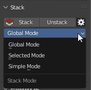

Stack
Panel

Stack
Collect Similar Islands on Stacks.
Properties

- Move Only - Don’t fit Islands. Just move to the same position.
- Stack Offset - The offset value. Can be used for preventing auto merging the UV vertices.
- Unstack Direction - The Direction where the island will be shifted.
Unstack
Shift Islands from Stacks in a given direction.
Stack Mode
Mode for Stacking.

Properties
- Global Mode - Collect all Similar Islands on Stacks.
- Selected Mode - Collect selected Similar Islands on Stacks.
- Simple Mode - Collect selected islands in the stack, with no respect for their topology.
Stack Display Mode
Primaries
Primaries this is islands which detected as a better instance. The position and the topology from Primaries will be translated to the Replicas. The island is defined as Primary if its position is closer to the center of coordinates, and the distortion of topology is less compared to other similar islands.
Replicas
Replicas are islands that have the same topology but were not chosen as Primary. The position and topology of the Replicas will be changed in the process of Stacking.
Singles
Singles this is islands that have no similar islands.
Options

- Similar (Static) - Display all Similar Islands. Static assumes that the displaying will not change along with a mesh change.
-
Selected - Display Similar Islands by Selected.
-
Stacked
 - Display Stacked Islands.
- Display Stacked Islands. -
Primaries
- Primary Islands. Without Replicated Islands. -
Replicas
- Islands that can be Stacked. Without Primary Islands. -
Singles
- Islands that don’t have Similar Islands. -
 Display - Display of stacks.
Display - Display of stacks. -
Select - Select Stack Parts. Every operator with this icon perform a selection operation for current types.
Options
Options for Stacked Islands

- Stacked Color - Color for displaying Stacked Islands.
- Only UV Area - Display Stacks only in the UV area.
Copy / Paste System
-
Copy - Copy parameters of selected Islands/Faces and save them.
-
Paste - Paste the parameters saved earlier to selected Islands/Faces.
Here is full information about Copy / Paste System.
Manual Stack
Panel

Area Matching 
Set strict requirements for Islands Area Matching when Stacking. Disable this option if the Islands have a slightly different Area.
Move Only 
Don’t fit Islands. Just move to the same position.
Add 
Add new Stack.
Delete 
Delete selected Stack.
Add Islands 
Append selected Islands to the active Stack.
Select Islands
Select Islands in the Stack
Analyze Stack 
Analyze Islands Similarities in the Stack. You can find details in the Zen UV Manual Stack Analyze document in the Text Editor.
Remove All 
Remove all Manual Stacks from selected Objects.
Stack
Collect Islands on Manual Stacks.
Unstack
Shift Islands from Manual Stacks in a given direction.
Stack Mode
Mode for Stacking.
Display Manual Stacks
Display Manual Stacks (Static)